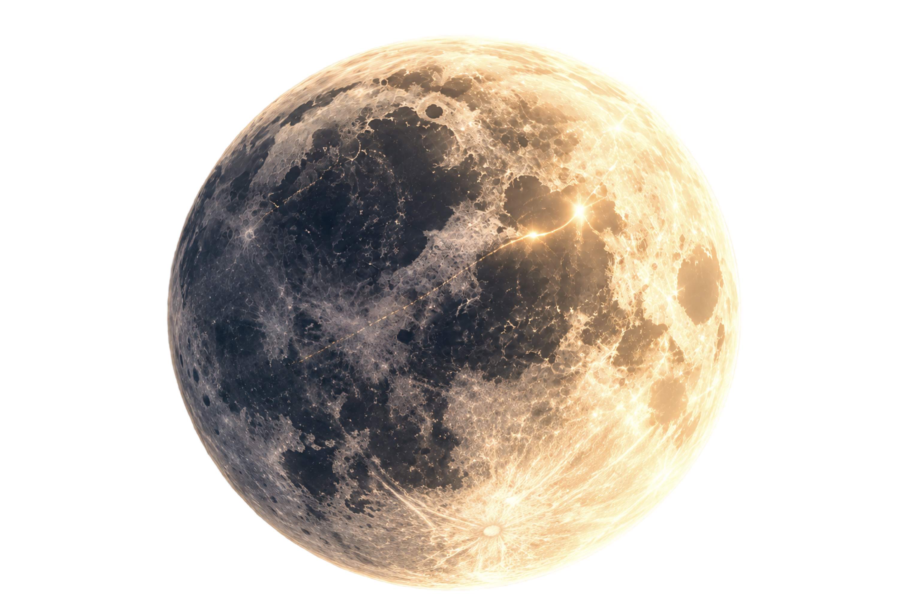

LO QUE
LA LUNA
mueve
La Luna influye en el movimiento de los océanos a través de su fuerza gravitacional. A lo largo de sus fases, y en combinación con la influencia del Sol, se producen variaciones en la altura de las mareas, creando un ciclo constante de ascensos y descensos.
Desliza entre las fases lunares y descubre cómo cambian las mareas mediante ondas interactivas y datos de su altura.
Continuar